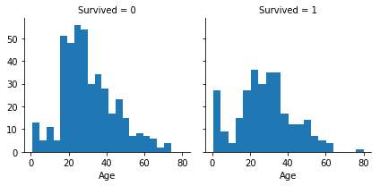
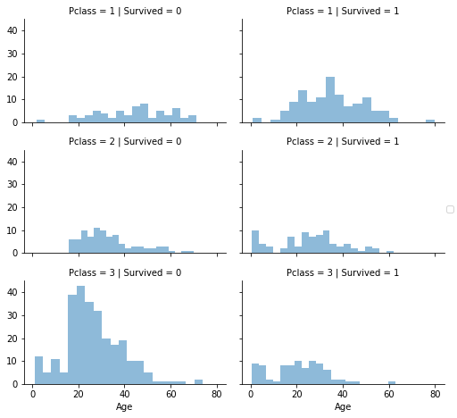
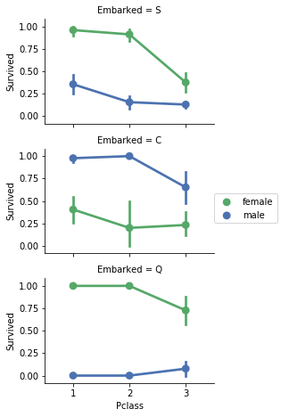
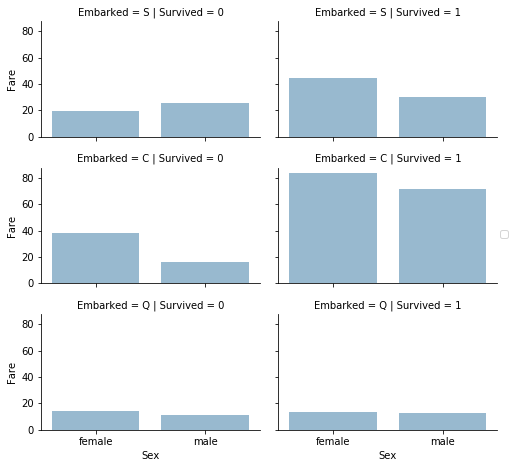
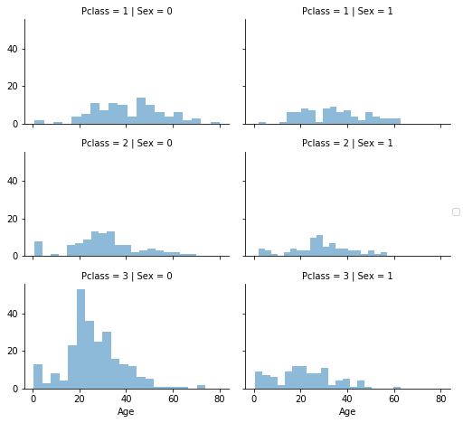

原文链接：Titanic Data Science Solution
工作流
kaggle比赛工作流包含7个阶段：
- 理解问题；
- 获取训练数据和测试数据；
- 数据清理；
- 分析、确定特征；
- 建模、训练、预测；
- 可视化、报告、提出解决问题的步骤和最终的方案；
- 提交结果。
理解问题
仔细审题，理解是分类问题还是回归问题，或者其它。
获取数据
1 | train_df = pd.read_csv('../input/train.csv') |
数据清理
pandas包含一些获取数据描述的方法。
数据有哪些特征？1
print(train_df.columns.values)
[‘PassengerId’ ‘Survived’ ‘Pclass’ ‘Name’ ‘Sex’ ‘Age’ ‘SibSp’
‘Parch’ ‘Ticket’ ‘Fare’ ‘Cabin’ ‘Embarked’]
预览数据：1
train_df.head()
哪些特征是分类的？
有些特征能将数据集分成多个子集。例如性别。可以对这些特征进行可视化，分析数据的分布。
- 分类的：Survived（是否幸存），Sex（性别），Embarked（登船口）
- 序列的：Pclass（舱位等级）
哪些特征是数值的？
这些数值特征是离散的、连续的、还是时间序列的？
- 连续的：Age（年龄），Fare（票价）
- 离散的：SibSp，Parch
哪些特征的数据类型是混乱的？
有些特征的数据类型既有数字的，也有字母的，这些特征在数据清理环节需要被处理。
- Ticket：数字和字母混合的
- Cabin（船舱）：字母的
哪些特征包含错误数据？
对于大型数据集来说比较困难，但是从较小的数据集中查看一些示例可能得出哪些特性需要改正。
- “Name”这个特征可能包含错误数据，因为有很多种方式来描述一个人的名字，如简称，名字字符串也可能附有圆括号或引号
哪些特征包含空值、null、NaN等？
包含空值的特征，是具体情况采用不同的方式进行填补。
- 这三个特征包含空值：Cabin > Age > Embarked
- Carbin和Age在测试集中不完整
各个特征的数据类型是什么？1
2
3train_df.info()
print("_" * 50)
test_df.info()
Output：1
2
3
4
5
6
7
8
9
10
11
12
13
14
15
16
17
18
19
20
21
22
23
24
25
26
27
28
29
30
31
32
33
34<class 'pandas.core.frame.DataFrame'>
RangeIndex: 891 entries, 0 to 890
Data columns (total 12 columns):
PassengerId 891 non-null int64
Survived 891 non-null int64
Pclass 891 non-null int64
Name 891 non-null object
Sex 891 non-null object
Age 714 non-null float64
SibSp 891 non-null int64
Parch 891 non-null int64
Ticket 891 non-null object
Fare 891 non-null float64
Cabin 204 non-null object
Embarked 889 non-null object
dtypes: float64(2), int64(5), object(5)
memory usage: 83.6+ KB
________________________________________
<class 'pandas.core.frame.DataFrame'>
RangeIndex: 418 entries, 0 to 417
Data columns (total 11 columns):
PassengerId 418 non-null int64
Pclass 418 non-null int64
Name 418 non-null object
Sex 418 non-null object
Age 332 non-null float64
SibSp 418 non-null int64
Parch 418 non-null int64
Ticket 418 non-null object
Fare 417 non-null float64
Cabin 91 non-null object
Embarked 418 non-null object
dtypes: float64(2), int64(4), object(5)
memory usage: 36.0+ KB
数值特征的分布是什么？
这一步在早期分析中，有助于我们充分理解数据。
- 样本总数为891，占实际所有人数2224的40%
- “Survived”是一种具有0或1值的分类特征
- 样本中的幸存率大约是38%，实际的幸存率为32%
- 大多数乘客（超过75%）没有和父母或孩子一起旅行
- 近三成的乘客有兄弟姐妹 和/或 配偶
- 票价差异很大，很少有乘客（<1%）支付高达512美元的费用
- 年龄在65-80岁之间的老人很少（<1%）
1 | train_df.describe() |
Output:
| PassengerId | Survived | Pclass | Age | SibSp | Parch | Fare | |
|---|---|---|---|---|---|---|---|
| count | 891.000000 | 891.000000 | 891.000000 | 714.000000 | 891.000000 | 891.000000 | 891.000000 |
| mean | 446.000000 | 0.383838 | 2.308642 | 29.699118 | 0.523008 | 0.381594 | 32.204208 |
| std | 257.353842 | 0.486592 | 0.836071 | 14.526497 | 1.102743 | 0.806057 | 49.693429 |
| min | 1.000000 | 0.000000 | 1.000000 | 0.420000 | 0.000000 | 0.000000 | 0.000000 |
| 25% | 223.500000 | 0.000000 | 2.000000 | 20.125000 | 0.000000 | 0.000000 | 7.910400 |
| 50% | 446.000000 | 0.000000 | 3.000000 | 28.000000 | 0.000000 | 0.000000 | 14.454200 |
| 75% | 668.500000 | 1.000000 | 3.000000 | 38.000000 | 1.000000 | 0.000000 | 31.000000 |
| max | 891.000000 | 1.000000 | 3.000000 | 80.000000 | 8.000000 | 6.000000 | 512.329200 |
分类特征的分布是什么样的？
- Name是唯一的（下表中，name的count为891，与样本总数一致）
- Sex的取值只有两种，其中male占多数，占比577/891=64.9%
- Cabin(船舱)有重复的，其中204个样本有船舱号，不同的船舱号有104个。所以存在多个样本的船舱号一样的情况。
译者注：同一个船舱号中的人可能都幸存。由此甚至可以推出，相同姓氏的人可能都幸存 - Embarked（登船口）有三种取值，其中从S口登船的人最多，有664个
- Ticket，有(891-681)/891=22%的样本的Tickt信息重复。
译者注：可能是登记错误导致的数据错误
1 | train_df.describe(include=['O']) |
Output:
| Name | Sex | Ticket | Cabin | Embarked | |
|---|---|---|---|---|---|
| count | 891 | 891 | 891 | 204 | 889 |
| unique | 891 | 2 | 681 | 147 | 3 |
| top | Lester, Mr. James | male | 347082 | G6 | S |
| freq | 1 | 577 | 7 | 4 | 644 |
基于数据分析进行假设
基于上述简单的分析得到一些假设，然后对数据进行深入的分析，进行验证。
Correlating（寻找特征的关联性）
- 我们想知道每个特征与结果的关系。我们希望在项目的早期就这样做，并将这些快速的相关性与项目后面的建模相关性进行匹配。
Completing（将缺失数据的特征进行补全）
- 我们可能想要完整的”Age”特征，因为它肯定与生存相关。
- 我们可能想要将“Embarked（登船口）”补全，因为它也可能与生存或另一个重要的特征相关。
Correcting（纠正数据）
- 在我们的分析中，可能要扔掉“Ticket”特征，因为它包含了高比率的重复(22%)，并且Ticket很可能与Survived无关
- 在训练和测试数据集中，Carbin（舱室）特征可能会被删除，因为它高度不完整或包含许多空值。
译者注：训练模型的时候可以把Carbin特征扔掉，后期模型融合的时候这个特征还是可以用的 - “PassengerId”特征可以删除，因为它对生存没有帮助。
- “Name”特征是相对不标准的，可能不会直接导致生存，所以可能会扔掉。
Creating（创造特征）
- 我们可能要基于Parch和SibSp创建一个新的特征，叫做“Family”，的家庭，以获得家庭成员的总数。
- 我们可能要从“Name”特征中提取“Title”作为一个新特征。
- 我们可能要为年龄层创造新的特征。这将一个连续的数字特征变成一个有序分类的特征。
译者注：根据年龄建立直方图，每10岁为一个bin - 我们可能还想创建一个Fare range的特征。
译者注：与Age特征类似
Classifying（分类）
我们还可以根据前面提到的问题描述增加我们的假设。
- 女性(性=女性)更可能存活。
- 儿童(Age小于多少)更有可能存活。
- 舱位等级越高的乘客(Pclass=1)更有可能幸存下来。
分别分析各个特征
- Pclass，这个特征具有明显的相关性，Pclass=1的幸存率>0.5(Classifying#3)。可以在模型中使用这个特性。
- Sex，女性的幸存率很高，达到74%（Classifying）
- SibSp和Parch，没有相关性。最好从这些特性(Creating#1)派生一个特性或一组特性。
Pclass1
2
3
4train_df[['Pclass', 'Survived']]
.groupby(['Pclass'], as_index=False)
.mean()
.sort_values(by='Survived', ascending=False)
Output:
| Pclass | Survived | |
|---|---|---|
| 0 | 1 | 0.629630 |
| 1 | 2 | 0.472826 |
| 2 | 3 | 0.242363 |
Sex1
2
3
4train_df[["Sex", "Survived"]]
.groupby(['Sex'], as_index=False)
.mean()
.sort_values(by='Survived', ascending=False)
Output:
| Sex | Survived | |
|---|---|---|
| 0 | female | 0.742038 |
| 1 | male | 0.188908 |
SibSp1
2
3
4train_df[["SibSp", "Survived"]]
.groupby(['SibSp'], as_index=False)
.mean()
.sort_values(by='Survived', ascending=False)
Output:
| SibSp | Survived | |
|---|---|---|
| 1 | 1 | 0.535885 |
| 2 | 2 | 0.464286 |
| 0 | 0 | 0.345395 |
| 3 | 3 | 0.250000 |
| 4 | 4 | 0.166667 |
| 5 | 5 | 0.000000 |
| 6 | 8 | 0.000000 |
通过可视化来分析
校正数值型特征
对于特征『Age』，使用sns.FacetGrid分析：1
2g = sns.FacetGrid(train_df, col='Survived')
g.map(plt.hist, 'Age', bins=20)
Output:

从图中观察到：
- 婴儿（小于4岁）的幸存率很高；
- 最老的乘客（等于80岁）幸存了；
- 大量的15-25岁的乘客没幸存；
- 大部分乘客的年龄分布在15-35岁；
结论：
- 可以将特征『Age』放到最终的模型中；
- 『Age』列为空的，需要补全；
- 可以将『Age』特征进行分段；
校正数值型和序数型特征
对特征『Pclass』进行分析1
2
3
4
5
6# grid = sns.FacetGrid(train_df, col='Pclass', hue='Survived')
grid = sns.FacetGrid(train_df,
col='Survived', row='Pclass',
size=2.2, aspect=1.6)
grid.map(plt.hist, 'Age', alpha=.5, bins=20)
grid.add_legend();
Output:

从图中观察到：
- Pclass=3的占大多数，但是大多数都没幸存；
- 在Pclass=2和Pclass=3中的婴儿，大部分都幸存了；
- Pclass=1的乘客大多数都幸存了；
- Pclass在乘客的年龄分布上有所不同。
结论：
- 考虑将『Pclass』放到最终的模型中。
关联分类型特征
对特征『Embarked』进行分析1
2
3
4
5
6# grid = sns.FacetGrid(train_df, col='Embarked')
grid = sns.FacetGrid(train_df,
row='Embarked', size=2.2, aspect=1.6)
grid.map(sns.pointplot,
'Pclass', 'Survived', 'Sex', palette='deep')
grid.add_legend()
Output:

可以观察到：
- 女性乘客的幸存率较高；
- 对C和Q口而言，Pclass=3的男性比Pclass=2的有更高的幸存率（译者注：从图上显示的是从C口上船的乘客中，男性比女性幸存率高）；
- 对Pclass=3的男性乘客而言，Embarked对生存率有不同的影响。
结论：
- 将『Sex』放到最终的模型中；
- 补全『Embarked』特征，加到模型中。（译者注：没看懂。）
关联分类型和数值型特征
我们还可能希望将分类特性(与非数值)和数字特性关联起来。我们可以考虑关联『Embarked』(非数字分类型)，『Sex』(非数字分类型)，Fare(连续的数值型)，与『Survived』(数字分类型)。
1 | # grid = sns.FacetGrid(train_df, col='Embarked', hue='Survived', palette={0: 'k', 1: 'w'}) |
Output:

可以从图中观察到：
- 花费高的乘客具有较高的幸存率；
- 『Embarked』与幸存率有关。
结论：
- 考虑将『Fare』特征进行分段。
Wrangle data
删除特征
删除特征『Cabin』和『Ticket』1
2
3
4
5
6
7
8
9print("Before", train_df.shape, test_df.shape,
combine[0].shape, combine[1].shape)
train_df = train_df.drop(['Ticket', 'Cabin'], axis=1)
test_df = test_df.drop(['Ticket', 'Cabin'], axis=1)
combine = [train_df, test_df]
print("After", train_df.shape, test_df.shape,
combine[0].shape, combine[1].shape)
Output:1
2Before (891, 12) (418, 11) (891, 12) (418, 11)
After (891, 10), (418, 9), (891, 10), (418, 9)
创造特征
我们在放弃『Name』和『PassengerId』的特征之前，想要分析『Name』特征是否可以被设计来提取『title』并测试『title』与幸存之间的关系。
在下面的代码中，我们使用正则表达式从『Name』特征中提取『Title』特征。
正则表达式"\w+\."匹配第一个单词是.结尾的。
1 | for dataset in combine: |
Output:
| Sex | female | male |
|---|---|---|
| Title | - | - |
| Capt | 0 | 1 |
| Col | 0 | 2 |
| Countess | 1 | 0 |
| Don | 0 | 1 |
| Dr | 1 | 6 |
| Jonkheer | 0 | 1 |
| Lady | 1 | 0 |
| Major | 0 | 2 |
| Master | 0 | 40 |
| Miss | 182 | 0 |
| Mlle | 2 | 0 |
| Mme | 1 | 0 |
| Mr | 0 | 517 |
| Mrs | 125 | 0 |
| Ms | 1 | 0 |
| Rev | 0 | 6 |
| Sir | 0 | 1 |
上表中存在一些title的数量很少的情况，可以将这些数量很少的title用Rare代替：1
2
3
4
5
6
7
8
9for dataset in combine:
dataset['Title'] = dataset['Title'].replace(['Lady', 'Countess','Capt', 'Col',\
'Don', 'Dr', 'Major', 'Rev', 'Sir', 'Jonkheer', 'Dona'], 'Rare')
dataset['Title'] = dataset['Title'].replace('Mlle', 'Miss')
dataset['Title'] = dataset['Title'].replace('Ms', 'Miss')
dataset['Title'] = dataset['Title'].replace('Mme', 'Mrs')
train_df[['Title', 'Survived']].groupby(['Title'], as_index=False).mean()
Output:
| Title | Survived | |
|---|---|---|
| 0 | Master | 0.575000 |
| 1 | Miss | 0.702703 |
| 2 | Mr | 0.156673 |
| 3 | Mrs | 0.793651 |
| 4 | Rare | 0.347826 |
从上表可以观察到：
- 女性（
Miss,Mrs）的幸存率较高
将上述『Title』特征转换成序列特征1
2
3
4
5
6title_mapping = {"Mr": 1, "Miss": 2, "Mrs": 3, "Master": 4, "Rare": 5}
for dataset in combine:
dataset['Title'] = dataset['Title'].map(title_mapping)
dataset['Title'] = dataset['Title'].fillna(0)
train_df.head()
Output:
| PassengerId | Survived | Pclass | Name | Sex | Age | SibSp | Parch | Fare | Embarked | Title | |
|---|---|---|---|---|---|---|---|---|---|---|---|
| 0 | 1 | 0 | 3 | Braund, Mr. Owen Harris | male | 22.0 | 1 | 0 | 7.2500 | S | 1 |
| 1 | 2 | 1 | 1 | Cumings, Mrs. John Bradley (Florence Briggs Th… | female | 38.0 | 1 | 0 | 71.2833 | C | 3 |
| 2 | 3 | 1 | 3 | Heikkinen, Miss. Laina | female | 26.0 | 0 | 0 | 7.9250 | S | 2 |
| 3 | 4 | 1 | 1 | Futrelle, Mrs. Jacques Heath (Lily May Peel) | female | 35.0 | 1 | 0 | 53.1000 | S | 3 |
| 4 | 5 | 0 | 3 | Allen, Mr. William Henry | male | 35.0 | 0 | 0 | 8.0500 | S | 1 |
至此，我们可以删除特征『Name』和『PassengerId』。
1 | train_df = train_df.drop(['Name', 'PassengerId'], axis=1) |
Output:1
((891, 9), (418, 9))
观察到（译者注：这块没看懂）:
- Most titles band Age groups accurately. For example: Master title has Age mean of 5 years.
- Survival among Title Age bands varies slightly.
- Certain titles mostly survived (Mme, Lady, Sir) or did not (Don, Rev, Jonkheer).
补全连续的数值型特征
首先补全『Age』特征，考虑三种方法：
- 一种简单的方法是在一定的均值和标准差之间生成随机数。
- 更准确的猜测缺失值的方法是使用其他相关的特性。在我们的案例中，我们注意到年龄、性别和Pclass之间的相关性。根据Pclass和Gender将数据分为多个子集，然后在子集中取年龄的中值。例如，对于Pclass=0且Gender为male的样本，在Pclass=0且Gender为male的子集中，取Age的中值；然后对于Pclass=0且Gender为female的样本以此类推。。。
- 结合方法1和2。与其直接基于中值法猜测年龄值，不如根据Pclass和Age分类后，再使用均值和标准差之间的随机数。
方法1和方法3将引入随机噪声。实践中，这几个方法略有差异，我们更倾向于方法2.
1 | # grid = sns.FacetGrid(train_df, col='Pclass', hue='Gender') |
Output:

Pclass有3种取值，Gender有2种取值，初始化一个2*3的数组，用来存储Age的中值：1
2
3
4
5
6
7
8
9
10
11
12
13
14
15
16
17
18
19
20
21
22
23
24
25
26guess_ages = np.zeros((2,3))
guess_ages
for dataset in combine:
for i in range(0, 2):
for j in range(0, 3):
guess_df = dataset[(dataset['Sex'] == i) & \
(dataset['Pclass'] == j+1)]['Age'].dropna()
# age_mean = guess_df.mean()
# age_std = guess_df.std()
# age_guess = rnd.uniform(age_mean - age_std, age_mean + age_std)
age_guess = guess_df.median()
# Convert random age float to nearest .5 age
guess_ages[i,j] = int( age_guess/0.5 + 0.5 ) * 0.5
for i in range(0, 2):
for j in range(0, 3):
dataset.loc[ (dataset.Age.isnull()) & (dataset.Sex == i) & (dataset.Pclass == j+1),\
'Age'] = guess_ages[i,j]
dataset['Age'] = dataset['Age'].astype(int)
#train_df.head()
将年龄分组：1
2
3
4
5train_df['AgeBand'] = pd.cut(train_df['Age'], 5)
train_df[['AgeBand', 'Survived']]
.groupby(['AgeBand'], as_index=False)
.mean()
.sort_values(by='AgeBand', ascending=True)
Output:
| AgeBand | Survived | |
|---|---|---|
| 0 | (-0.08, 16.0] | 0.550000 |
| 1 | (16.0, 32.0] | 0.337374 |
| 2 | (32.0, 48.0] | 0.412037 |
| 3 | (48.0, 64.0] | 0.434783 |
| 4 | (64.0, 80.0] | 0.090909 |
将『AgeBand』转换为连续数值型特征：1
2
3
4
5
6
7for dataset in combine:
dataset.loc[ dataset['Age'] <= 16, 'Age'] = 0
dataset.loc[(dataset['Age'] > 16) & (dataset['Age'] <= 32), 'Age'] = 1
dataset.loc[(dataset['Age'] > 32) & (dataset['Age'] <= 48), 'Age'] = 2
dataset.loc[(dataset['Age'] > 48) & (dataset['Age'] <= 64), 'Age'] = 3
dataset.loc[ dataset['Age'] > 64, 'Age']
train_df.head()
删除『AgeBand』特征：1
2
3train_df = train_df.drop(['AgeBand'], axis=1)
combine = [train_df, test_df]
train_df.head()
组合创造出新的特征
- 我们能将『Parch』和『SibSp』组合创造出新的特征『FamilySize』。
1 | for dataset in combine: |
Output:
| FamilySize | Survived | |
|---|---|---|
| 3 | 4 | 0.724138 |
| 2 | 3 | 0.578431 |
| 1 | 2 | 0.552795 |
| 6 | 7 | 0.333333 |
| 0 | 1 | 0.303538 |
| 4 | 5 | 0.200000 |
| 5 | 6 | 0.136364 |
| 7 | 8 | 0.000000 |
| 8 | 11 | 0.000000 |
可以观察到，『FamilySize』特征与是否幸存无线性关系。
- 创造『IsAlone』特征
1
2
3
4
5
6
7for dataset in combine:
dataset['IsAlone'] = 0
dataset.loc[dataset['FamilySize'] == 1, 'IsAlone'] = 1
train_df[['IsAlone', 'Survived']]
.groupby(['IsAlone'], as_index=False)
.mean()
Output:
| IsAlone | Survived | |
|---|---|---|
| 0 | 0 | 0.505650 |
| 1 | 1 | 0.303538 |
至此，可以删掉『Parch』、『SibSp』、『FamilySize』特征，保留『IsAlone』特征。1
2
3
4
5train_df = train_df.drop(['Parch', 'SibSp', 'FamilySize'], axis=1)
test_df = test_df.drop(['Parch', 'SibSp', 'FamilySize'], axis=1)
combine = [train_df, test_df]
train_df.head()
补全分类型特征
『Embarked』特征具有三种取值:S、Q、C。训练集中有2个样本为空值，我们可以简单地用最多的一种取值代替。1
2
3
4
5
6
7
8
9
10
11freq_port = train_df.Embarked.dropna().mode()[0]
freq_port
'S'
for dataset in combine:
dataset['Embarked'] = dataset['Embarked'].fillna(freq_port)
train_df[['Embarked', 'Survived']]
.groupby(['Embarked'], as_index=False)
.mean()
.sort_values(by='Survived', ascending=False)
Output:
| Embarked | Survived | |
|---|---|---|
| 0 | C | 0.553571 |
| 1 | Q | 0.389610 |
| 2 | S | 0.339009 |
将分类型特征转换成数值型特征
将『Embarked』特征转换成数值型特征，起个新名字『Port』。
1 | for dataset in combine: |
快速地补全、转换数值型特征
用中值补全测试数据集『Fare』特征中唯一一个缺失值。
1 | test_df['Fare'].fillna( |
创造『FareBand』特征：1
2
3
4
5train_df['FareBand'] = pd.qcut(train_df['Fare'], 4)
train_df[['FareBand', 'Survived']]
.groupby(['FareBand'], as_index=False)
.mean()
.sort_values(by='FareBand', ascending=True)
Output:
| FareBand | Survived | |
|---|---|---|
| 0 | (-0.001, 7.91] | 0.197309 |
| 1 | (7.91, 14.454] | 0.303571 |
| 2 | (14.454, 31.0] | 0.454955 |
| 3 | (31.0, 512.329] | 0.581081 |
可见『FareBand』特征与是否幸存线性有关。
将『FareBand』特征转换成连续数值型特征1
2
3
4
5
6
7
8
9
10
11for dataset in combine:
dataset.loc[ dataset['Fare'] <= 7.91, 'Fare'] = 0
dataset.loc[(dataset['Fare'] > 7.91) & (dataset['Fare'] <= 14.454), 'Fare'] = 1
dataset.loc[(dataset['Fare'] > 14.454) & (dataset['Fare'] <= 31), 'Fare'] = 2
dataset.loc[ dataset['Fare'] > 31, 'Fare'] = 3
dataset['Fare'] = dataset['Fare'].astype(int)
train_df = train_df.drop(['FareBand'], axis=1)
combine = [train_df, test_df]
train_df.head(10)
建模、预测、解决问题
现在我们有60多种预测建模算法可供选择。我们必须了解问题的类型和解决方案的要求，以缩小到我们可以评估的少数几个模型。我们的问题是分类和回归问题。我们想要确定输出(Survived)与其他变量或特征(Sex、Age、Port……)之间的关系。我们也在实践一种机器学习方法，称为监督式学习，因为我们正在用给定的数据集训练我们的模型。有了这两个标准——监督学习加分类和回归，我们可以将模型的选择缩小到少数。这些包括:
- Logistics Regression
- KNN or k-Nearest Neighbors
- Support Vector Machines
- Naive Bayes classifier
- Decision Tree
- Random Forrest
- Perceptron
- Artificial neural network
- RVM or Relevance Vector Machine
1 | X_train = train_df.drop("Survived", axis=1) |
Logistic Regression
1 | # Logistic Regression |
我们可以使用Logistic Regression来验证我们的假设和创造的特性。这可以通过分析特征的系数来实现。
正系数增加了响应的对数概率(从而增加了概率)，负系数减小了响应的对数概率(从而降低了概率)。1
2
3
4
5coeff_df = pd.DataFrame(train_df.columns.delete(0))
coeff_df.columns = ['Feature']
coeff_df["Correlation"] = pd.Series(logreg.coef_[0])
coeff_df.sort_values(by='Correlation', ascending=False)
Output:
| Feature | Correlation | |
|---|---|---|
| 1 | Sex | 2.201527 |
| 5 | Title | 0.398234 |
| 2 | Age | 0.287163 |
| 4 | Embarked | 0.261762 |
| 6 | IsAlone | 0.129140 |
| 3 | Fare | -0.085150 |
| 7 | Age*Class | -0.311200 |
| 0 | Pclass | -0.749007 |
- 『Sex』是最高的正系数，表示随着『Sex』值的增加(男性:0，女性:1)，幸存的概率增加最多。
- 当『Pclass』增加时，幸存的概率减少最多。
- 这种『Age*Class』是一个很好的人工特征模型，因为它与生存的负相关系数是第二高的。
- 『Title』是第二高正相关的。
译者注：特征的重要性与系数的绝对值大小有关
SVM
1 | # Support Vector Machines |
KNN
1 | knn = KNeighborsClassifier(n_neighbors = 3) |
Naive Bayes
1 | # Gaussian Naive Bayes |
Perceptron
1 | # Perceptron |
Linear SVC
1 | # Linear SVC |
Stochastic Gradient Descent
1 | sgd = SGDClassifier() |
Decision Tree
1 | decision_tree = DecisionTreeClassifier() |
Random Forest
1 | random_forest = RandomForestClassifier(n_estimators=100) |
模型评估
我们现在可以对所有的模型的结果进行排序，以选出最适合我们的模型。虽然决策树和随机森林得分相同，但我们选择使用随机森林，因为决策树容易过拟合。
1 | models = pd.DataFrame({ |
Output:
| Model | Score | |
|---|---|---|
| 3 | Random Forest | 86.76 |
| 8 | Decision Tree | 86.76 |
| 1 | KNN | 84.74 |
| 0 | Support Vector Machines | 83.84 |
| 2 | Logistic Regression | 80.36 |
| 7 | Linear SVC | 79.12 |
| 5 | Perceptron | 78.00 |
| 6 | Stochastic Gradient Decent | 77.67 |
| 4 | Naive Bayes | 72.28 |
计算结果1
2
3
4
5submission = pd.DataFrame({
"PassengerId": test_df["PassengerId"],
"Survived": Y_pred
})
# submission.to_csv('../output/submission.csv', index=False)
我们提交给比赛网站Kaggle的结果是在6082个样本中命中了3,883个。
参考文献：
- A journey through Titanic
- Getting Started with Pandas: Kaggle’s Titanic Competition
- Titanic Best Working Classifier
【部分表述有待完善。。。】